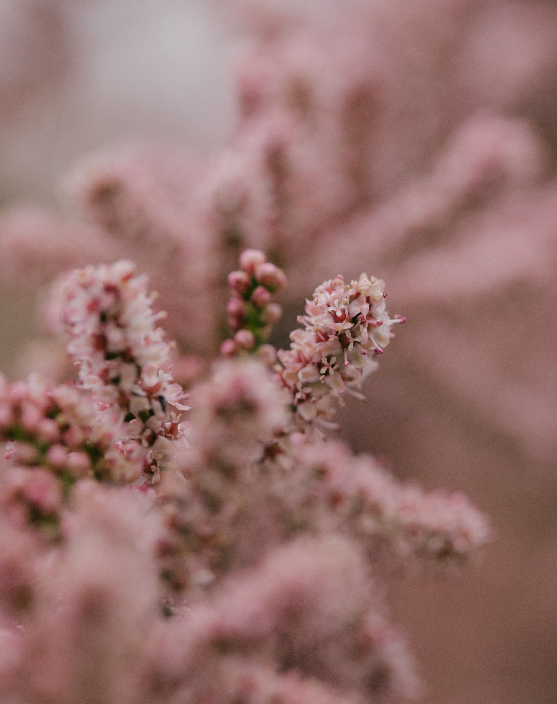
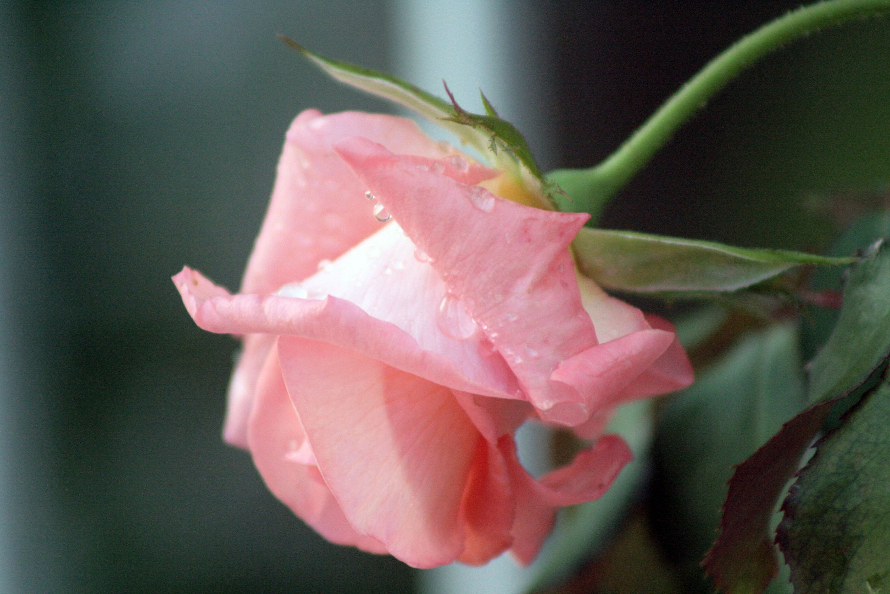
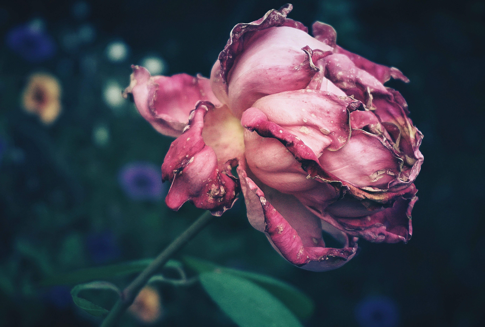

UM OLHAR SOBRE O TEMPO
Entre Flores
A beleza das flores também está em suas mudanças. Cada momento revela uma nova forma, uma nova cor e uma nova história.
SOBRE O PROJETO
Flores, tempo e transformação
Entre Flores é uma experiência visual dedicada a observar as transformações de uma flor ao longo do tempo. Através da fotografia, pequenos detalhes ganham destaque e mostram que a beleza também existe na mudança. Esse projeto está sendo realizado para o curso de fotografia que eu faço e decidi trazer ele pra cá.
GALERIA
Momentos entre flores

Delicadeza
Os pequenos detalhes de uma flor

Tempo
As mudanças que acontecem ao longo do dia.

Transformação
Uma nova forma de perceber a natureza.
OBSERVE
Uma flor, diferentes momentos
CONTATO